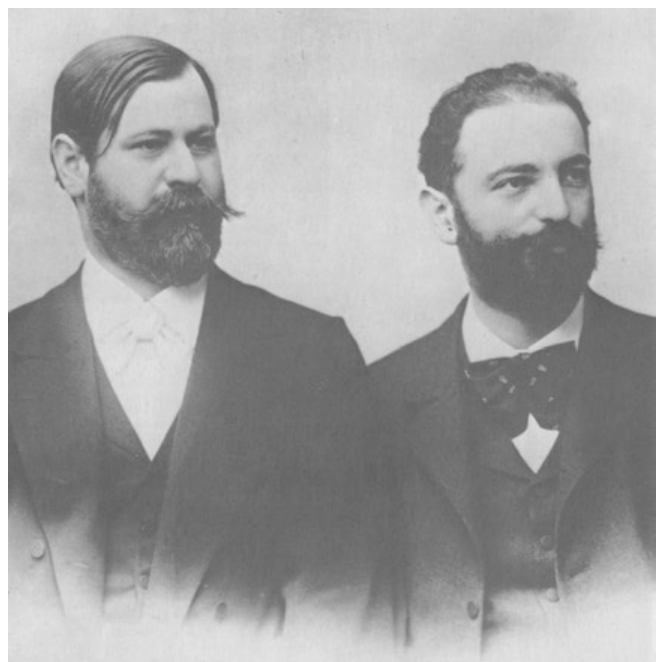

Editors' Note

西格蒙德·弗洛伊德与威廉·弗利斯，约 1890 年代初
In a letter to Fliess dated April 2, 1896, Freud wrote: ‘If we are both granted a few more years of quiet work, we shall certainly leave behind something which will justify our existence. That feeling strengthens me against all daily cares and worries. When I was young, the only thing I longed for was philosophical knowledge, and now that I am going over from medicine to psychology I am in the process of attaining it.’
在 1896 年 4 月 2 日致弗利斯的一封信中，弗洛伊德写道：“倘若我们二人都能再得几年安静工作的时光，我们必将在身后留下足以证明我们此生意义的东西。这种感觉使我得以抵御日常的一切操劳与烦忧。我年轻之时，唯一渴求者唯哲学知识而已；而如今，当我由医学转而走向心理学，我正在将它逐步实现。”
By permission of The Marsh Agency Ltd., on behalf of Sigmund Freud Copyrights.
经 The Marsh Agency Ltd. 授权，代表 Sigmund Freud Copyrights。
GERMAN EDITIONS
1950 In Aus den Anfängen der Psychoanalyse, edited by Marie Bonaparte, Anna Freud & Ernst Kris, London: Imago Publishing Co. (Abridged.)
1950 年，收于《精神分析的开端》[Aus den Anfängen der Psychoanalyse]，由玛丽·波拿巴（Marie Bonaparte）、安娜·弗洛伊德（Anna Freud）与恩斯特·克里斯（Ernst Kris）编辑，伦敦：Imago 出版公司（节本）。
1986 S. Freud, Briefe an Wilhelm Fliess 1887–1904 (edited by J. M. Masson), Frankfurt am Main: S. Fischer Verlag. (Unabridged.)
1986 年，S. 弗洛伊德：《致威廉·弗利斯的信 1887–1904》[Briefe an Wilhelm Fliess 1887–1904]（J. M. 马森 [J. M. Masson] 编），美因河畔法兰克福：S. 费舍尔出版社（全本）。
ENGLISH TRANSLATIONS
1954 In The Origins of Psycho-Analysis, edited as above, London: Imago Publishing Co.; New York: Basic Books. (Abridged.) (Tr. Eric Mosbacher & James Strachey.)
1954 年，收于《精神分析的开端》[The Origins of Psycho-Analysis]，同上编辑，伦敦：Imago 出版公司；纽约：Basic Books（节本）。（译：埃里克·莫斯巴赫 [Eric Mosbacher] 与詹姆斯·斯特雷奇 [James Strachey]。）
1966 SE, I, 177–387. (Selected letters only.) (Revised version of the 1954 translations.)
1966 年，SE 第 1 卷，第 177–387 页。（仅选收书信。）（1954 年译本之修订版。）
1985 The Complete Letters of Sigmund Freud to Wilhelm Fliess 1887–1904, Cambridge, MA, and London: Harvard University Press. (Unabridged.) (Tr. Jeffrey Masson.)
1985 年，《西格蒙德·弗洛伊德致威廉·弗利斯全部书信 1887–1904》[The Complete Letters of Sigmund Freud to Wilhelm Fliess 1887–1904]，马萨诸塞州剑桥与伦敦：哈佛大学出版社（全本）。（译：杰弗里·马森 [Jeffrey Masson]。）
The present translation is a revised and corrected version of the SE one.
本译文为 SE 译本之修订校正版。
The history of Freud’s relations with Wilhelm Fliess (1858–1928) is fully narrated in Chapter XIII of the first volume of Ernest Jones’s biography of Freud (1953) and in Ernst Kris’s introduction to the earliest books in the bibliography above. Here it is only necessary to explain that Fliess, a man two years younger than Freud, was a nose and throat specialist living in Berlin with whom Freud carried on a voluminous and intimate correspondence between 1887 and 1902. Fliess was a man of great ability, with very wide interests in general biology; but he pursued theories in that field which are regarded today as eccentric and quite untenable. He was, however, more amenable to Freud’s ideas than any other contemporary. Freud accordingly communicated his thoughts to him with the utmost freedom and did so not only in his letters but in a series of papers (‘Drafts’ as they are called here) which presented organized accounts of his developing views and are in some cases first sketches of his later published works. The most important of these papers is the long one – some forty thousand words – to which we have given the title of ‘Project for a Scientific Psychology’. But the whole series, written as it was during the formative years of Freud’s psychoanalytic theories culminating in The Interpretation of Dreams, deserves the closest study.
弗洛伊德与威廉·弗利斯（1858–1928）之间的关系史，已由欧内斯特·琼斯（Ernest Jones）所著弗洛伊德传记第一卷第十三章（1953）以及恩斯特·克里斯为上引最早几卷所写导言完整叙述。此处只需说明：弗利斯比弗洛伊德小两岁，是一位居于柏林的耳鼻喉专科医生，弗洛伊德在 1887 至 1902 年间与他保持了大量而亲密的通信。弗利斯才华出众，对一般生物学兴趣极广；但他在该领域所执持的若干理论，今日看来怪僻且全然站不住脚。然而，比起任何其他同时代人，他更能接纳弗洛伊德的思想。弗洛伊德遂以最大的坦率向他倾诉自己的思考，且不仅诉诸书信，更诉诸一系列论文（此处统称“草稿”[Drafts]）——这些论文条理分明地陈述了他不断演进的观点，其中若干更成为他日后发表著作的初稿。这些论文中最为重要的一篇长达约四万字，我们已将其题名为《科学心理学大纲》[Project for a Scientific Psychology]。但整套系列写于弗洛伊德精神分析理论成形、终以《梦的解析》[The Interpretation of Dreams] 为顶点的那些奠基岁月，值得我们最细致的研究。
These papers, and even the fact of their existence, were totally unknown until the time of the Second World War.¹ The melodramatic story of their discovery and rescue is also told by Ernest Jones in the same chapter of his biography. Our principal debt over the whole business is to Princess Marie Bonaparte (Princess George of Greece), who not only acquired the papers in the first instance but had the remarkable courage to defy the efforts to destroy them made by their author and her teacher.
这些文稿，乃至其存在这一事实本身，在第二次世界大战之前都全然不为人知。¹ 它们被发现与获救的那段跌宕经历，亦由欧内斯特·琼斯在同一传记章节中讲述。于整件事，我们首要的感激归于玛丽·波拿巴公主（希腊的乔治王妃），她不仅率先获得了这些文稿，更以非凡的勇气，抵制了它们的作者及其导师毁弃它们的企图。
Only a selection from these papers was published in 1950. And for the Standard Edition James Strachey made a further selection from that selection. Although the unabridged correspondence has since become available, we have not found it necessary to extend Strachey’s selection for the Revised Standard Edition. We have chosen (a) the ‘Project for a Scientific Psychology’, (b) all but one of the ‘Drafts’, and (c) such portions of the letters as seem to have a significant bearing on the history of psychoanalysis and the development of Freud’s views. The reader will do well to bear in mind that the material in these drafts and letters was not intended by their author as the considered expression of his opinions, and that it is often framed in a highly condensed form. Surprise need not therefore be felt at the occasional presence of inconsistencies and obscurities.
这批文稿在 1950 年只选印了一部分。而为《标准版》[Standard Edition]，詹姆斯·斯特雷奇又在这一选本之上再做取舍。尽管此后全本通信已经问世，我们仍认为并无必要为《修订标准版》[Revised Standard Edition] 扩充斯特雷奇的选目。我们选取了：(a)《科学心理学大纲》；(b) 除一篇外的全部“草稿”；(c) 书信中那些看来对精神分析的历史与弗洛伊德观点的演进具有重大意义的部分。读者不妨牢记：这些草稿与书信中的材料，其作者本无意将其作为自己深思熟虑的意见表述，且往往以高度凝缩的形式写就。因此，其中偶或出现前后不一与含混之处，亦不足为怪。
The present translation is based on the revised German version printed in 1986. Significant deviations from the 1950 version are mentioned in the Editors’ footnotes. The lettering and numbering of the drafts and letters in the 1950 (and 1954 English) editions have been retained for simplicity of reference, and for the reasons explained in the Editor’s preface above (p. xxx). We have followed the editors of the Anfänge (for reasons explained below, p. 247) in detaching the ‘Project’ from the rest of the correspondence and printing it at the end of the volume.
本译文以 1986 年印行的德文修订版为依据。与 1950 年版的重大出入，已见于编者脚注。草稿与书信在 1950 年（及 1954 年英文）版中的字母与编号予以保留，以便检索，理由已见上文编者前言（第 xxx 页）。我们遵从《开端》[Anfänge] 编者的做法（理由见下文第 247 页），将《大纲》[Project] 从其余通信中分离出来，置于全书之末。
脚注 / Footnotes
¹ Fliess’s side of the correspondence has not survived, having no doubt been destroyed long since.
¹ 弗利斯那一侧的通信未能留存，无疑早已被毁。